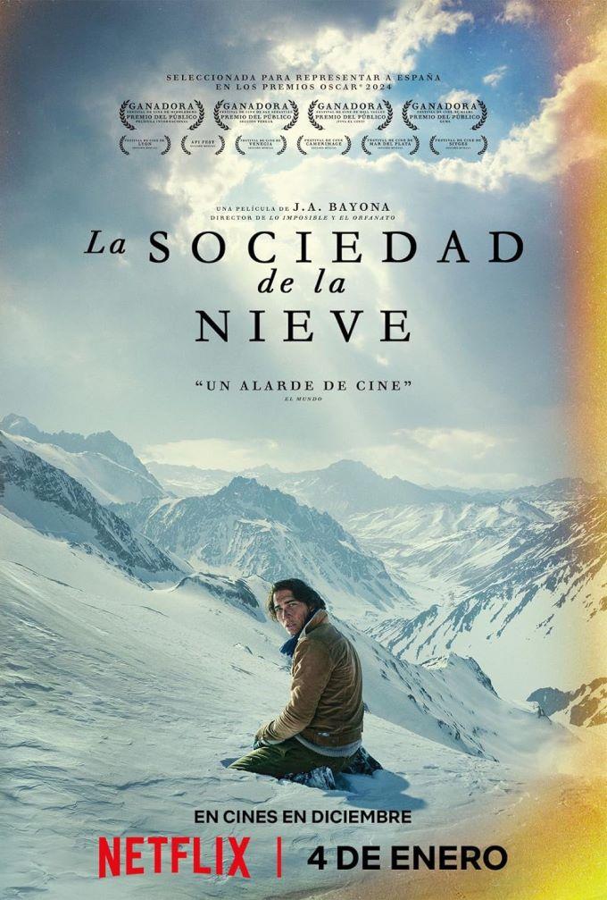
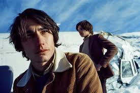

El protagonista

El progragonista en realidad son todos los sobrevivientes del accidente de Los Andes.
sin embargo el narrador que nos guia a lo largo de la historia de la sociedad de la nieve es: Numa turcati
quien nos guia atraves de esta inmersiva historia haciendonos refleccionar sobre la vida en tiempos de crisis
La Tragedia
todo comienda cuando los amigos de numa turcati lo invitan a un viaje en Avion debido
necesitaban costear el pasaje del avion gracias a ello numa acepta viajar con sus amigos y en medio del vuelo lo que no tenia que
paso el avion se descontrolo y se partio a la mitad y muchos pasajeros salieron volando y muriendo en el proceso solo numa y sus amigos
lograron sobrevivir sin embargo eso luego no fue lo peor sino el terrible infierno que los esperaba.
La organizacion
Despues de la tragedia era necesario tener un lider y el capitan del equipo toma el
liderasgo para poder dirigir al grupo de forma organizada y correcta. sin embargo pronto las reglas del mundo dejarian de ser importantes
levantandose nuevas reglas y costumbres que nunca antes ubiesen imaginado.
La segunda Tragedia
Este suceso Ocurre despues del horror de estar comiendo Carne Humana para poder
subsistir ya que ya no habia comida que pudiesen ingerir, ocurriendo la segunda tragedia en un momento de felicidad donde los protagonistas
estan riendo y compartiendo un momento de felicidad y de repente llega un avalancha que entierra al grupo superviviente dejando consigo
muertos y heridos la gente orinaba sus manos para poder evitar el dolor del frio hielo en medio de la desesperacion lograron salir sin embargo
ocurre una segunda tragedia donde una segunda avalancha termina por seputlar al grupo dentro de la nieve terminando asi con la vida del capitan
del grupo sin un lider claro otro propone comer los cuerpos de sus amigos y para poder subsistir y seguir a adelante y asi se realiza.
El levantamientode un nuevo lider
.jpeg)
Con la muerte del antiguo lider del grupo un hombre Nando se levantaria un hombre que perdio a su hermana y su madre en el mismo accidente
el con miedo y sin saber exactamente que hacer se levanto como un nuevo lider gracias a la conviccion y el nuevo conocimiento aquirido
dirigio al grupo a la cola del avion donde consiguio cigarrillos chocolate bebidas y lo mas importante un impermiable que serviria para
el futuro en el ultimo viaje que em
prenderia para salvarlos del olvido en las montañas
El impulso final
despues de que el nuevo lider se levantara nuestro narrador Numa turcati esta debil debido a la herida causada por un
vidrio que lastimo su pierna al intentar desesperadamente salir de la nieve que nos sepulto su herida se infecto y el sabia que moriria en los Andes
y debido a ello el consintio comer de su cuerpo para salvar a sus amigos y un dia el durmio y ya no volvio a abrir los ojos ese fue el ultimo impulso que
necesito su grupo para que pudiesen salir a explorar por ultima ves a hora con un impermiable para las gelidas noches emprendiendo un viaje de una semana
sin saber si lograrian salir de el infierno de hielo
El fin del infierno de hielo
Pasado una semana de viaje Nando y Roberto logran conseguir llegar al altiplano sin hielo y pronto logrna encontrar
a un arriero y contando su situacion y con la informacion dada por Nando y Roberto la milicia chilena logra rescatar a los supervivientes.